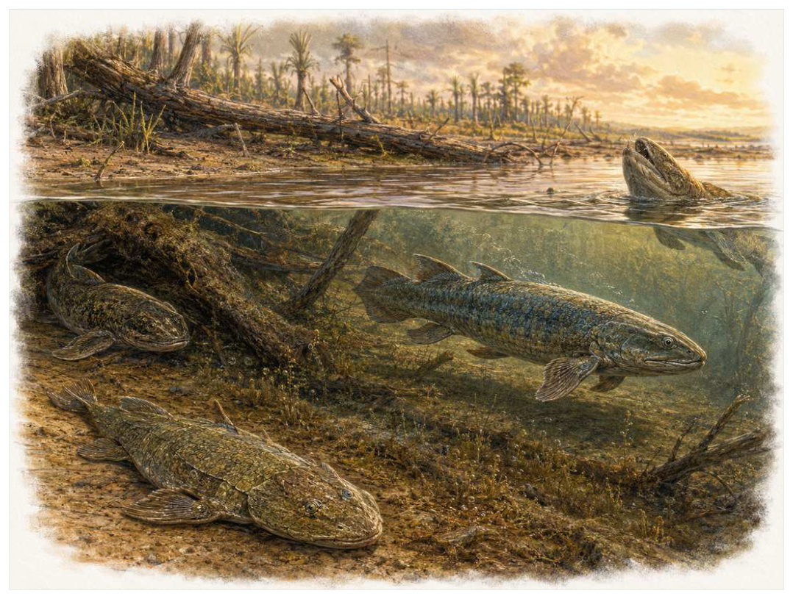

第07篇 · 泥盆纪：鱼类时代与四足动物起源 · 第 21 章
肉鳍鱼的浅水世界：肺、鳍与头部运动
本篇主题:泥盆纪：鱼类时代与四足动物起源
颌、鳍、森林和浅水环境共同推动脊椎动物的新实验。

本章科学复原配图 （用于呈现结构与生态关系, 不替代化石照片、测量数据与系统发育证据。）
生命史推进到中泥盆世至晚泥盆世，约3.93亿至3.60亿年前时，旧支系仍在延续，新结构也开始改变竞争规则。四足动物并不是由某条突然决心爬上岸的鱼产生。它们的祖先属于肉鳍鱼类，在河道、三角洲、洪泛平原和季节性缺氧水域中，早已拥有能承担重量的成对鳍、可进行空气呼吸的肺或肺样器官，以及逐渐摆脱肩带束缚的头部。许多后来用于陆地行走的结构，最初在水中承担支撑、转向、抬头和穿行植被等功能。
进入这个时代
若真正置身其中，首先感受到的是介质本身：水是否含氧、地面是否稳定、空气是否干燥、植被是否遮挡视线。身体结构只有放在这些条件中才有意义。在泥盆纪河口的浑水里，视野被枝条、漂木和密集水草切碎。浅水会快速升温，溶氧随季节下降，水道还可能暂时断裂。粗壮鳍骨让鱼在水底稳住身体，气孔和肺样器官帮助它在水面换气；这些适应首先解决的是水中问题。
在“肉鳍鱼的浅水世界：肺、鳍与头部运动”所覆盖的时间里，不能把地理与气候当作固定背景。海陆位置、海平面、河流或植被结构会改变资源可达性，同一性状在不同地区可能得到完全相反的选择结果。
以肉鳍鱼的浅水世界：肺、鳍与头部运动为例，旧结构被重新利用是宏演化的常见路径。自然选择无法从零绘图，只能修改已有骨骼、膜、基因调控和生活史。后来承担新功能的结构，往往最初因完全不同的局部收益而扩散。 在本章中，这一约束具体落在“浅水中的低氧使空气呼吸具有直接收益”这条关系上。
再从中泥盆世至晚泥盆世，约3.93亿至3.60亿年前的时间尺度看，亲缘与外形不能混为一谈。相似身体可能来自共同祖先，也可能来自趋同；过渡类型也不是两类动物的机械拼接，而是当时能够正常摄食、运动和繁殖的完整生物。 它与“肺与鳃的功能分工”共同决定了后续变化可以沿哪些路径发生。
生态系统如何运转
“浅水中的低氧使空气呼吸具有直接收益”体现了生态系统的反馈性。一方结构或行为稍有改变，另一方的防御、逃避、繁殖和空间选择就会重新排列，长期累积后才形成宏观演化差异。
围绕“浅水中的低氧使空气呼吸具有直接收益”，从演化树看，相似关系可能在远亲中反复出现。功能相近不必意味着近缘，而同一祖先结构也可能被后代改作完全不同的用途；生态解释必须与系统发育互相校验。 对肉鳍鱼的浅水世界：肺、鳍与头部运动而言，这一后果还会与“复杂底质奖励能够精细支撑与转向的成对鳍”相互放大或抵消。
在中泥盆世至晚泥盆世，约3.93亿至3.60亿年前，“复杂底质奖励能够精细支撑与转向的成对鳍”把环境条件转化为生物之间的差异。相同气候并不会平均影响所有支系，因为它们利用的食物、水层、底质和繁殖地点并不相同。
围绕“复杂底质奖励能够精细支撑与转向的成对鳍”，当环境快速越过生理阈值时，原有互动甚至来不及通过适应重新平衡。此时灭绝的选择性会更多取决于分布、食物来源和繁殖速度，而不是平时竞争中的相对强弱。 对肉鳍鱼的浅水世界：肺、鳍与头部运动而言，这一后果还会与“捕食者、洪水和水道断裂不断改变局部选择压力”相互放大或抵消。
本章的一条关键关系是“捕食者、洪水和水道断裂不断改变局部选择压力”。它首先改变资源在个体之间的分配：能更早发现、处理或占据资源的种群获得收益，而另一方会承受新的选择压力。
围绕“捕食者、洪水和水道断裂不断改变局部选择压力”，这种关系没有永恒赢家。收益随密度和环境改变：防御越常见，攻击专门化的价值越高；资源越稀少，维持昂贵结构的代价越大。化石记录中的扩张与衰退，常是这种动态平衡被外部事件打破的结果。 对肉鳍鱼的浅水世界：肺、鳍与头部运动而言，这一后果还会与“浅水中的低氧使空气呼吸具有直接收益”相互放大或抵消。
关键演化创新
在“肉鳍鱼的浅水世界：肺、鳍与头部运动”中，围绕“肺与鳃的功能分工”，“肺与鳃的功能分工”没有把生物推向更高级层级，而是重新划分可利用资源。它让某些水层、食物尺寸、活动时间或繁殖地点变得可行，同时也带来能量、材料和发育控制成本。 它首先需要在中泥盆世至晚泥盆世，约3.93亿至3.60亿年前的生态条件下产生可测量收益。
就“肺与鳃的功能分工”而言，研究者通过近缘支系比较、发育同源、关节活动、微观组织和出现顺序重建这条路径。真正有价值的过渡化石不是“半成品”，而是证明中间组合可以独立生活。 本章把它与“肉鳍内部骨骼的承重能力”并列，是为了显示复杂性状往往依赖多部分协同。
在“肉鳍鱼的浅水世界：肺、鳍与头部运动”中，围绕“肉鳍内部骨骼的承重能力”，“肉鳍内部骨骼的承重能力”一旦出现，还会改变其他物种的环境。新的捕食方式、取食高度或繁殖场所会制造选择压力，促使整个群落而不只是发明者发生响应。 它首先需要在中泥盆世至晚泥盆世，约3.93亿至3.60亿年前的生态条件下产生可测量收益。
就“肉鳍内部骨骼的承重能力”而言，它的成功具有条件性。环境稳定时，专门化可提高效率；危机到来时，同一专门化可能限制食物和栖息地选择。演化创新因此既能开启辐射，也能制造新的脆弱性。 本章把它与“肩带与头骨逐步脱离”并列，是为了显示复杂性状往往依赖多部分协同。
在“肉鳍鱼的浅水世界：肺、鳍与头部运动”中，围绕“肩带与头骨逐步脱离”，“肩带与头骨逐步脱离”没有把生物推向更高级层级，而是重新划分可利用资源。它让某些水层、食物尺寸、活动时间或繁殖地点变得可行，同时也带来能量、材料和发育控制成本。 它首先需要在中泥盆世至晚泥盆世，约3.93亿至3.60亿年前的生态条件下产生可测量收益。
就“肩带与头骨逐步脱离”而言，这一变化还可能在多个支系中独立发生。若功能相似而解剖来源不同，就是趋同；若结构来自共同祖先但功能改变，则属于同源结构的分化。二者不能仅靠外观判断。 本章把它与“肺与鳃的功能分工”并列，是为了显示复杂性状往往依赖多部分协同。
生命群像：把物种放回生态网络
真掌鳍鱼（Eusthenopteron foordi）
若把镜头从时代拉近到个体，真掌鳍鱼（Eusthenopteron foordi）会首先进入视野。它生活于晚泥盆世，约3.85亿年前，体型约约1.2米。作为河口或近岸水域的肉鳍鱼捕食者，它依靠鳍内具有与肱骨、桡尺骨可比较的骨序列，头骨仍保持典型鱼类特征与环境和其他生物发生关系。
对真掌鳍鱼而言，它的成功不需要在所有性能上压倒其他物种，只需在特定资源和风险组合中留下更多后代。速度、咬合、装甲、感官与繁殖之间存在预算，某项性能极端化往往意味着另一项被牺牲。所谓“霸主”只是复杂权衡后的区域性结果。这使“鳍内具有与肱骨、桡尺骨可比较的骨序列，头骨仍保持典型鱼类特征”不能脱离其河口或近岸水域的肉鳍鱼捕食者角色来理解。
其复原依赖保存良好的头骨、鳍骨和椎骨支持其位于四足动物近亲支系，而非直接祖先。年代和保存形态通常属于较强证据，体重、速度、颜色和社会行为则需要额外假设。书中把这些层次拆开，是为了让读者知道哪些可视为事实，哪些仍应等待更多材料。
由真掌鳍鱼这个案例看，它不是祖先链条上必须跨过的一格。演化树中同时存在许多近缘支系，只有少数留下后代；旁支化石同样关键，因为它们显示某组性状出现的顺序和可行范围。 它在晚泥盆世，约3.85亿年前留下的记录，因此同时是第21章所讨论的形态史和生态史的一部分。
潘氏鱼（Panderichthys rhombolepis）
潘氏鱼（Panderichthys rhombolepis）存在于晚泥盆世，约3.80亿年前。现有材料显示其大小约约1至1.3米，生态位置接近浅水底栖或伏击型肉鳍鱼。身体变扁、眼位靠上，胸鳍骨骼更适合在底部支撑让它成为理解本章主题的合适案例，但不意味着同一类群所有成员都采用相同策略。
对潘氏鱼而言，从种群角度看，偶发捕猎和个体伤病远不如长期繁殖率重要。广泛分布的普通个体比一具异常巨大的标本更能代表支系，然而普通个体往往较少进入公众叙事。研究者必须防止把化石收藏偏好误当成古代丰度。 这使“身体变扁、眼位靠上，胸鳍骨骼更适合在底部支撑”不能脱离其浅水底栖或伏击型肉鳍鱼角色来理解。
科学家并未直接看见它生活，依据是拉脱维亚标本和断层扫描揭示鳍内远端骨，但尚无真正指趾。现代类比可以帮助提出可检验模型，却不能取代化石；越具体的短时行为，越需要痕迹、内容物或重复病理等直接线索。
由潘氏鱼这个案例看，这个案例还提醒我们，亲缘和生态角色是两件事。近亲可以因资源分化而外形迥异，远亲也能因相似压力而趋同。把它放在演化树和食物网两个坐标中，才不会误写成线性进步。 它在晚泥盆世，约3.80亿年前留下的记录，因此同时是第21章所讨论的形态史和生态史的一部分。
孔鳞鱼（Gogonasus andrewsae）
在晚泥盆世，约3.80亿年前，孔鳞鱼（Gogonasus andrewsae）以约约30至40厘米的身体参与食物网。它不是孤立的“明星生物”，而是礁湖中的小型肉鳍鱼；保存精细的吻部、鳍和内骨骼显示四足动物式特征曾在多条支系中组合出现决定它能利用哪些资源，也决定必须承担哪些成本。
对孔鳞鱼而言，把它放回群落后，结构的意义更清楚。食物并不会平均分布，水深、植被高度、底质和季节把资源切成小块；它的身体让其中一部分资源可被利用，也使它与近缘种错开生态位。种群命运还取决于幼体能否成长、繁殖地点是否稳定以及灾害后是否仍有避难所。 这使“保存精细的吻部、鳍和内骨骼显示四足动物式特征曾在多条支系中组合出现”不能脱离其礁湖中的小型肉鳍鱼角色来理解。
证据核心是澳大利亚戈戈组的三维化石避免压扁，支持对鼻孔和鳍关节的精确比较。化石记录更擅长回答“结构是什么”，较难回答“每天怎样行动”。足迹、胃内容物、咬痕或胚胎若存在，会显著缩小推测范围；若只有零散骨骼，行为叙述就必须更克制。
由孔鳞鱼这个案例看，它所代表的身体方案后来可能消失，也可能被远亲以不同材料重新发明。生命史因此既有可重复的功能解，也有不可复制的谱系路径。两者结合，才解释现代生物为何既熟悉又偶然。它在晚泥盆世，约3.80亿年前留下的记录，因此同时是第21章所讨论的形态史和生态史的一部分。
格里普鱼（Glyptolepis）
认识格里普鱼（Glyptolepis）要先放弃静态骨架印象。它生活在泥盆纪，约约一米级，日常任务是作为淡水或河口肉鳍鱼维持能量与繁殖。粗大鳞片与空气呼吸相关结构展示肉鳍鱼生态多样性只是这一整套生活史中最容易化石化的部分。
对格里普鱼而言，同域物种的存在迫使它分割时间与空间。相似牙齿不一定吃完全相同的食物，相似四肢也可能适应不同底质；微磨损、同位素和伴生群落常能揭示这种细分。环境改变时，原本减少竞争的专门化又可能成为迁移和改食的障碍。 这使“粗大鳞片与空气呼吸相关结构展示肉鳍鱼生态多样性”不能脱离其淡水或河口肉鳍鱼角色来理解。
判断它的生活方式时，研究者首先使用材料提示它属于另一条肉鳍鱼支系，不能被排成四足动物祖先阶梯。随后会检验替代解释：同样的牙是否也能处理其他食物，同样的骨骼比例是否由年龄造成，同一骨层是否来自群体生活还是灾难性聚集。排除过程比贴标签更重要。
由格里普鱼这个案例看，过去的复原常受完整现代动物模板影响，新材料则迫使研究者接受更陌生的身体比例或生活方式。最稳妥的表达是保留估计区间，并明确哪些软组织、颜色和社会行为仍属合理推测。 它在泥盆纪留下的记录，因此同时是第21章所讨论的形态史和生态史的一部分。
现代肺鱼（Dipnoi）
现代肺鱼（Dipnoi）生活在现生支系，祖先可追溯至泥盆纪，已知体型约为从数十厘米到两米以上。它在群落中的角色可概括为淡水底栖、部分种类可空气呼吸或旱眠。最值得观察的结构是肺、肉质鳍和低氧耐受帮助理解祖先可能拥有的功能组合。这些结构不是为了后来时代而准备，而是在当时直接影响摄食、运动、防御或繁殖。
对现代肺鱼而言，它的成功不需要在所有性能上压倒其他物种，只需在特定资源和风险组合中留下更多后代。速度、咬合、装甲、感官与繁殖之间存在预算，某项性能极端化往往意味着另一项被牺牲。所谓“霸主”只是复杂权衡后的区域性结果。这使“肺、肉质鳍和低氧耐受帮助理解祖先可能拥有的功能组合”不能脱离其淡水底栖、部分种类可空气呼吸或旱眠角色来理解。
关于它的直接依据是：现生肺鱼经过数亿年独立演化，只能作为功能类比，不是‘活着的祖先’。研究者还必须确认骨骼是否属于同一个体、是否被水流搬运、压扁是否改变比例，以及不同大小是否只是成长阶段。只有解剖、地层和功能证据相互一致，复原才可上调为高可信。
由现代肺鱼这个案例看，它在生命史中的价值不在于离现代形态还有多远，而在于证明这一身体组合曾真实可行。即使没有直系后代，支系也可能在当时持续繁盛，并通过捕食、植食或栖息地工程改变其他生命的选择环境。 它在现生支系，祖先可追溯至泥盆纪留下的记录，因此同时是第21章所讨论的形态史和生态史的一部分。
因果链：环境、生态与性状
从资源入口看，“浅水中的低氧使空气呼吸具有直接收益”决定能量首先由谁获得，而“复杂底质奖励能够精细支撑与转向的成对鳍”决定能量随后怎样在群落中转移。只有当个体能够借助“肺与鳃的功能分工”把资源转化为生长或后代时，形态优势才会成为种群优势。真掌鳍鱼与潘氏鱼分别展示了这条链上的不同位置：前者的鳍内具有与肱骨、桡尺骨可比较的骨序列，头骨仍保持典型鱼类特征使其偏向河口或近岸水域的肉鳍鱼捕食者，后者的身体变扁、眼位靠上，胸鳍骨骼更适合在底部支撑则服务于浅水底栖或伏击型肉鳍鱼。这并不意味着二者必然直接竞争；更常见的情况是，它们通过共享资源、改变栖息地或影响共同捕食者而间接连接。把这种间接作用纳入，才看得见肉鳍鱼的浅水世界：肺、鳍与头部运动不是物种名单，而是一张持续重新分配能量的网络。
“捕食者、洪水和水道断裂不断改变局部选择压力”说明环境不是在所有个体身上平均施力。若一个种群分布广、世代较短或能使用多种资源，它可能把一次局部危机吸收到地理和生活史差异之中；若另一个种群依赖狭窄水深、单一植物或特定繁殖场，平时高效的专门化就可能在变化中放大风险。潘氏鱼和孔鳞鱼的差异可以用来提出这种比较，但不能仅凭外形宣布谁更适应。真正需要的是地层连续性、地区分布、年龄结构和伴生群落共同告诉我们，哪些性状在肉鳍鱼的浅水世界：肺、鳍与头部运动的具体条件下转化成了更稳定的繁殖。
如果把肉鳍鱼的浅水世界：肺、鳍与头部运动当作一次自然实验，可以追问：假如“浅水中的低氧使空气呼吸具有直接收益”较弱，“肉鳍内部骨骼的承重能力”是否仍会带来同样收益；假如“复杂底质奖励能够精细支撑与转向的成对鳍”更强，真掌鳍鱼的鳍内具有与肱骨、桡尺骨可比较的骨序列，头骨仍保持典型鱼类特征是否反而成为负担。反事实无法直接验证，却能帮助研究者识别模型隐含的因果假设。随后再用鳍内肱骨、桡骨和尺骨同源结构的比较和头骨气孔、鳃盖和肩带连接关系寻找可区分的预测：不同机制应在体型分布、损伤类型、沉积环境或出现顺序上留下不同痕迹。科学解释不是为现有图景编一个顺耳故事，而是让相互竞争的解释接受同一批材料检验。
“浅水中的低氧使空气呼吸具有直接收益”与“捕食者、洪水和水道断裂不断改变局部选择压力”之间常存在反馈。一个支系改变沉积、植被或猎物数量后，环境会对其自身和其他支系产生新的选择压力；短期收益可能导致长期资源下降，局部工程行为也可能创造此前不存在的栖息地。真掌鳍鱼作为河口或近岸水域的肉鳍鱼捕食者，孔鳞鱼作为礁湖中的小型肉鳍鱼，即使从不直接相遇，也可能经由这种环境改造联系起来。生态系统因此不是静态背景上的竞赛场，而是参与者不断修改规则的动态结构；这正是解释肉鳍鱼的浅水世界：肺、鳍与头部运动为何会留下长期后果的关键。
亲缘关系为功能解释设定边界。“肩带与头骨逐步脱离”若在近缘支系中以不同程度出现，最简解释通常是祖先已具备部分结构，后代分别强化或丢失；若远亲在相似生态位中出现相近功能，则需要检查内部解剖是否来自不同材料。真掌鳍鱼与孔鳞鱼可用于演示这一区分：外形近似不自动证明近缘，外形差异也不否定深层同源。把系统发育树、年代和生态证据叠在一起，才能判断肉鳍鱼的浅水世界：肺、鳍与头部运动中的相似究竟来自共同继承、趋同还是保留的原始特征。
时代横截面：个体、种群与证据
把真掌鳍鱼与潘氏鱼并排观察，可以看到同一时代并不存在唯一正确的身体方案。真掌鳍鱼以鳍内具有与肱骨、桡尺骨可比较的骨序列，头骨仍保持典型鱼类特征参与河口或近岸水域的肉鳍鱼捕食者，潘氏鱼则依靠身体变扁、眼位靠上，胸鳍骨骼更适合在底部支撑承担浅水底栖或伏击型肉鳍鱼；两者可能在食物尺寸、活动空间或时间上错开，从而降低直接竞争。若环境改变使这些维度重新重叠，原先共存的支系才可能发生更强替代。比较的目的不是判断谁更先进，而是识别每套结构在哪些条件下有效、在哪些条件下暴露成本。
尺度转换是肉鳍鱼的浅水世界：肺、鳍与头部运动最容易被忽略的问题。真掌鳍鱼的一次摄食、一次移动或一次繁殖属于分钟到季节尺度；种群扩张需要数百至数万年；“肺与鳃的功能分工”在演化树上的固定则可能跨越更久。短期观察能够说明结构怎样工作，却不能单独解释支系为何在中泥盆世至晚泥盆世，约3.93亿至3.60亿年前扩张。反之，宏观多样性曲线能显示替换，却不能指出每次选择发生在什么身体和生活阶段。把尺度接起来，因果链才完整。
从失败的替代解释出发，能够看见研究如何推进。若把真掌鳍鱼简单解释为河口或近岸水域的肉鳍鱼捕食者，就应检查其鳍内具有与肱骨、桡尺骨可比较的骨序列，头骨仍保持典型鱼类特征是否真的适合该功能；若另一种功能同样可行，再看磨损、同位素、沉积环境或共存生物能否区分。潘氏鱼与孔鳞鱼提供了比较基线，帮助判断某一结构是普遍祖征、特殊适应还是成长阶段差异。结论不是从外观直觉跳出，而是在一系列被排除的可能性之后留下。
本章还可以作为灭绝选择性的预演。若危机首先削弱“浅水中的低氧使空气呼吸具有直接收益”，依赖该环节的真掌鳍鱼可能比外形更脆弱但食物广泛的潘氏鱼更早衰退；若危机破坏的是繁殖场或幼体环境，成年体型和武器几乎不能提供保护。分布范围、成熟速度、休眠能力与食谱因此要和鳍内具有与肱骨、桡尺骨可比较的骨序列，头骨仍保持典型鱼类特征、身体变扁、眼位靠上，胸鳍骨骼更适合在底部支撑等显眼结构一起评估。危机筛选的是整套生活史，而不是单项竞技能力。
从保存角度看，真掌鳍鱼和潘氏鱼也可能被化石记录不公平地对待。真掌鳍鱼的鳍内具有与肱骨、桡尺骨可比较的骨序列，头骨仍保持典型鱼类特征若包含坚硬、容易辨认的部分，就更可能被采集和命名；潘氏鱼若身体柔软、个体小或生活在侵蚀环境，真实丰度可能被严重低估。鳍内肱骨、桡骨和尺骨同源结构的比较能补充一部分信息，头骨气孔、鳃盖和肩带连接关系又提供另一尺度的限制。只有先问“什么容易被保存”，再问“什么当时常见”，才不会把博物馆展柜的比例误当成古生态比例。
科学家为什么这样判断
使用“鳍内肱骨、桡骨和尺骨同源结构的比较”时必须处理保存偏差。坚硬组织、低氧埋藏和火山灰覆盖更容易留下记录，岩层出露与采集历史又决定样本数量。统计分析通常要校正这些不均匀性，避免把采样强度当作真实多样性。
围绕“头骨气孔、鳃盖和肩带连接关系”，高可信结论通常来自独立方法一致。例如形态暗示某种食性时，微磨损、同位素或胃内容物若给出相同方向，解释便更稳固；若结果冲突，就应保留生态弹性或地区差异。
证据条目“沉积环境与伴生植物化石重建浅水栖息地”的作用，是把肉眼可见的化石转化为可检验结论。研究者先确认样品的层位和成岩历史，再测量结构、比较近缘种并建立替代模型；若解释只在一套参数下成立，就不能写成唯一事实。
在“肉鳍鱼的浅水世界：肺、鳍与头部运动”这一问题上，把上述方法合在一起，研究者才能从残缺材料走向受约束的复原。任何一条证据都可能受到成岩、污染、样本量或现代类比的限制；结论越具体，越需要多条独立证据指向同一方向，并与中泥盆世至晚泥盆世，约3.93亿至3.60亿年前的地层背景相容。
过去的图景与今天的证据
把肺、粗壮鳍和扁平头骨统称为‘为登陆准备’会倒置因果。这些结构在水中就能提高存活和摄食效率；它们后来被重新利用，是共同选择而不是预先设计。肺在硬骨鱼共同祖先中的起源、某些鱼鳔与肺的同源细节仍在讨论，但空气呼吸明显早于真正陆栖。
围绕“肉鳍鱼的浅水世界：肺、鳍与头部运动”，数据存在范围时，本书使用约数而非虚假精确值。体型会因缺失骨骼和软组织密度变化，年代会因定年误差调整，灭绝比例会因分类和采样校正改变；一个区间往往比醒目的单值更科学。
对中泥盆世至晚泥盆世，约3.93亿至3.60亿年前的材料而言，当多种机制可以并存时，不应为了故事简洁强迫选择唯一原因。氧气、温度、营养、捕食和地理隔离常形成反馈，研究目标是约束各环节的时间和强度，而不是寻找一句万能口号。
跨尺度观察
空间镶嵌：同一地质时期包含多个大陆、纬度和海盆。地区之间可因山脉、海峡和洋流形成不同群落，局部化石库不能代表全球平均。比较多个地点能区分真正的全球事件与区域替换。 在“肉鳍鱼的浅水世界：肺、鳍与头部运动”中，这一尺度具体连接了“浅水中的低氧使空气呼吸具有直接收益”与“肺与鳃的功能分工”，因而不能只从单个成年标本判断。
系统发育：直接祖先极难在化石中确认，因为旁支和祖先形态可能非常相似。更可靠的表达是某物种位于一组关键分叉附近，展示某些性状已经出现。演化树表达亲缘，不表达价值高低。 在“肉鳍鱼的浅水世界：肺、鳍与头部运动”中，这一尺度具体连接了“复杂底质奖励能够精细支撑与转向的成对鳍”与“肉鳍内部骨骼的承重能力”，因而不能只从单个成年标本判断。
微生物底盘：宏体生态依赖微生物完成分解、固氮和碳硫循环。即使章节聚焦巨型动物，尸体最终仍由微生物和小型分解者处理；大灭绝后的恢复也往往先表现为生产和分解网络重建，而非大型动物立即回归。 在“肉鳍鱼的浅水世界：肺、鳍与头部运动”中，这一尺度具体连接了“捕食者、洪水和水道断裂不断改变局部选择压力”与“肩带与头骨逐步脱离”，因而不能只从单个成年标本判断。
通向下一个时代
从本章走向下一阶段时，需要保留的不是一串物种名，而是一个因果链：环境改变可用能量与栖息地，生态关系筛选性状，性状又反过来改造环境。当鳍骨和头部运动在浅水中不断改变，真正具有指趾的四足型动物开始出现。下一章将把Eusthenopteron、Tiktaalik、Acanthostega和Ichthyostega放进连续而分叉的化石序列。
本章精选来源
- [R41] Boisvert, C. A., Mark-Kurik, E. & Ahlberg, P. E. The pectoral fin of Panderichthys and the origin of digits. Nature 456, 636-638 (2008).
- [R42] Engelman, R. K. A Devonian fish tale: a new method of body length estimation suggests much smaller sizes for Dunkleosteus terrelli. Diversity 15, 318 (2023).
- [R43] Sallan, L. C. & Coates, M. I. End-Devonian extinction and a bottleneck in the early evolution of modern jawed vertebrates. Proceedings of the National Academy of Sciences 107, 10131-10135 (2010).
- [R44] Stein, W. E. et al. Giant cladoxylopsid trees resolve the enigma of the Earth’s earliest forest stumps. Nature 446, 904-907 (2007).
- [R45] Berry, C. M. et al. The earliest known forests recognized in the Middle Devonian of New York. Current Biology 30, R111-R112 (2020).